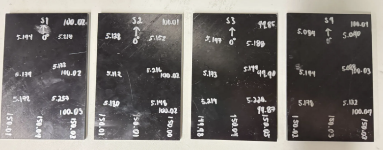
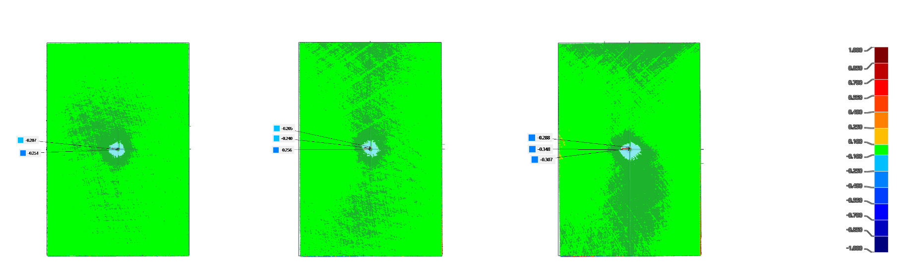
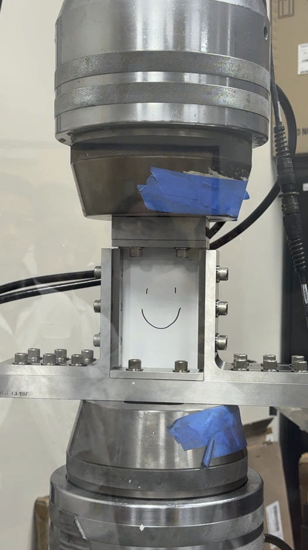
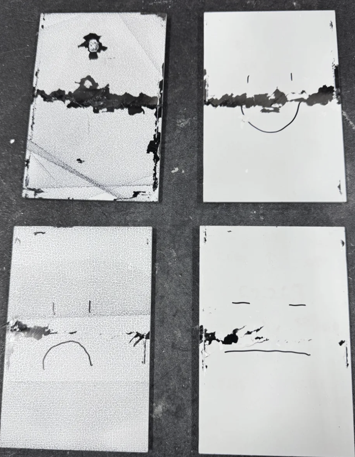

Experimental Characterization of Composite Impact Damage and Residual Strength
Compression After Impact Testing · ASTM D7136 / ASTM D7137 methods
- ASTM D7136 impact testing
- ASTM D7137 CAI
- Laser-scan dent metrology
- Failure analysis
Residual compressive strength
Residual compressive strength
Residual compressive strength
Three valid CAI specimens are shown; the 19.1 J specimen was excluded from the residual-strength comparison after additional damage and repeated loading.
- ORGANIZATION
- Purdue University
- COURSE / PROJECT
- MSE 586 — Composite Materials / Compression After Impact Testing
- STANDARD METHODS
- ASTM D7136 and ASTM D7137
- MATERIAL
- IM7/8552 CFRP
- PERIOD
- Fall 2026
- TEAM
- Three students
Project overview
This project investigated the impact damage resistance and residual compressive strength of quasi-isotropic carbon-fiber-reinforced polymer laminates. As part of a semester-long composite materials characterization course, my three-person team planned and conducted combined ASTM D7136 drop-weight impact and ASTM D7137 compression-after-impact (CAI) experiments.
I took a leading role in organizing specimen preparation, coordinating access to specialized equipment in another laboratory, establishing the testing schedule, troubleshooting experimental difficulties, and preparing the analysis and technical presentation. The work required establishing a test capability not previously demonstrated in our teaching laboratory.
Specimen manufacturing
We manufactured four IM7/8552 CFRP specimens using a 32-ply quasi-isotropic [0/45/90/−45]4s stacking sequence. Specimens measured approximately 150 × 100 mm, with recorded thicknesses from 5.128 to 5.199 mm.
Manufacturing included prepreg layup, vacuum bagging, autoclave curing, waterjet cutting, dimensional inspection, and specimen quality assessment. Consistent geometry and careful dimensional checks mattered because specimen thickness and edge condition influence both the impact response and subsequent compression loading.

Drop-weight impact testing
We impacted the specimens on an Instron 9250HV Dynatup drop-weight impact machine using a 16 mm hemispherical impactor. The four investigated impact energies were 19.1, 36.3, 45.1, and 53.1 J. We characterized response using force measurements, impact-energy calculations, and inspection of surface damage.
Damage-onset forces ranged from 7.0 to 7.8 kN, while maximum impact forces ranged from 7.7 to 13.3 kN. The specimens absorbed approximately 84–88% of the incident impact energy. Laser scanning measured dent depths of 0.251 mm at 36.3 J, 0.256 mm at 45.1 J, and 0.348 mm at 53.1 J.
These relatively small surface dents do not establish that internal damage is minor: impact can produce subsurface damage that is not represented by surface indentation alone. We therefore paired surface observations with residual compression testing rather than treating dent depth as a complete damage measure.


Experimental troubleshooting and test setup
I coordinated access to impact-testing equipment in another laboratory, including scheduling, specimen preparation, and test execution. For CAI testing, our initial attempt using a 22-kip load frame did not produce the required specimen failure.
To address this equipment limitation, I helped coordinate use of a 55-kip MTS load frame. Our team prepared the equipment, learned the Wyoming compression-fixture procedure, established the setup, and successfully loaded the impacted specimens to failure.

Compression-after-impact testing
Impacted specimens were installed in a Wyoming compression fixture and loaded in the 55-kip test machine at a nominal crosshead displacement rate of approximately 1.25 mm/min. Three specimens were retained for the reported residual-strength comparison. Each exhibited lateral failure through the impact-damaged region, classified as LDM.
The 19.1 J specimen was excluded from the valid CAI comparison because additional damage and repeated loading invalidated its result. The table reports only the three retained specimens.
| Impact energy (J) | Maximum compression force (kN) | Residual compressive strength (MPa) | Fraction of 649 MPa model reference |
|---|---|---|---|
| 36.3 | 78.9 | 153 | 23.6% |
| 45.1 | 66.0 | 127 | 19.6% |
| 53.1 | 62.5 | 122 | 18.8% |
Bar lengths use a 0–180 MPa scale.

Analytical modeling
Classical Laminate Theory (CLT) was used to calculate laminate stiffness using transformed reduced stiffness matrices and the ABD formulation. A Tsai–Wu ply-level failure analysis predicted an undamaged-laminate compressive strength of approximately 649 MPa under the assumed material properties. This is a model reference, not an experimentally measured undamaged strength.
The measured residual strengths corresponded to approximately 23.6% at 36.3 J, 19.6% at 45.1 J, and 18.8% at 53.1 J of that predicted reference. The comparison illustrates the importance of impact-induced damage mechanisms that are not explicitly represented by the undamaged-laminate CLT/Tsai–Wu model; it does not establish a direct experimental validation of the model.
Experimental limitations
- Only one valid specimen was available at each reported impact energy, limiting statistical confidence.
- No strain-gauge or digital image correlation (DIC) measurements were made to verify percent bending.
- Some specimens exceeded thickness-taper requirements.
- Compression failures occurred in approximately 45–53 seconds.
- Secondary impacts occurred because a rebound catcher was unavailable.
- No undamaged reference specimens were tested experimentally.
These constraints limit statistical confidence and formal standard compliance. The experiments used ASTM D7136 and D7137 methods, but the overall CAI experiment did not fully meet all ASTM D7137 requirements; the results should not be described as fully ASTM-compliant.
Engineering takeaways
The project developed my experience in experimental planning and coordination, composite specimen manufacturing, mechanical test setup, and working within equipment limitations. It also connected laser-scanning damage characterization and quantitative failure analysis with laminate-level analytical modeling.
Equally important was learning to report what the evidence can and cannot establish. Limited specimen counts, setup constraints, and deviations from standard requirements shaped how we interpreted the strength comparison and communicated its limitations.